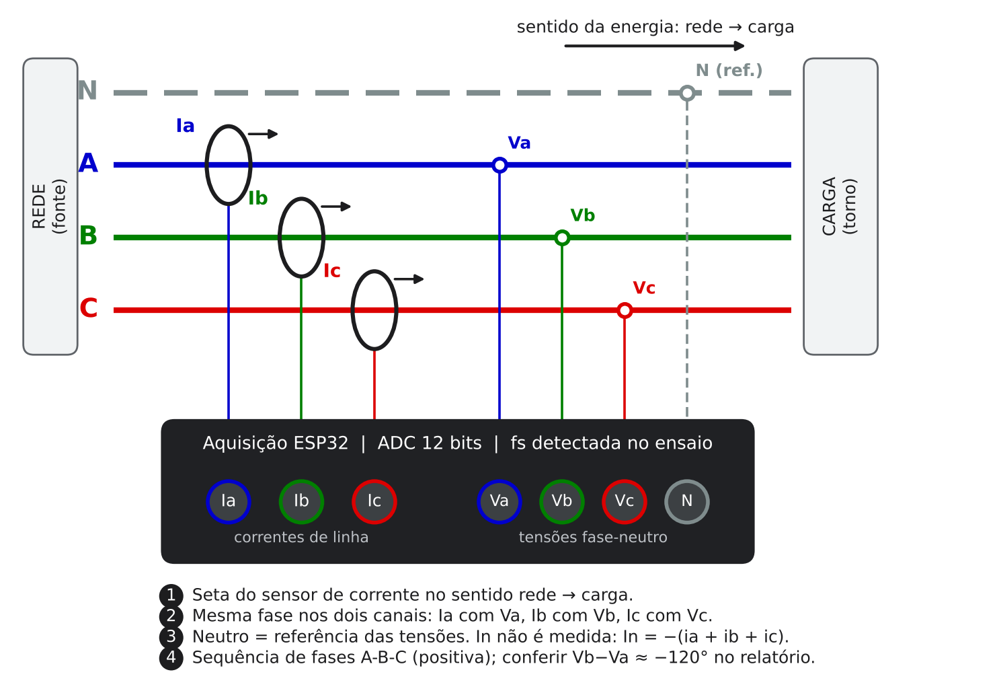

Análise de grandezas elétricas
Ensaios trifásicos 3F+N adquiridos com o ESP32. Os arquivos são processados neste navegador; nada é enviado para servidor.
- Ligação
- Configuração
- Arquivos
- Faixas
- Resultados
1Ligação 3F+N

Sistema trifásico a 4 fios (3F+N), tensões medidas entre fase e neutro. Confira a ligação dos sensores:
- Seta do sensor de corrente no sentido rede → carga.
- Mesma fase nos dois canais: Ia com Va, Ib com Vb, Ic com Vc.
- Neutro = referência das tensões. In não é medida (é calculada).
- Sequência de fases A-B-C (positiva).
ADVERTÊNCIA: desligue e bloqueie o circuito antes de instalar as pontas de tensão.
2Configuração da análise
Parâmetros avançados
A taxa de amostragem não é parâmetro: o programa detecta a taxa de cada ensaio pela frequência da rede (ver o manual, seção 9).
3Arquivos do ensaio e pasta de resultados
Arquivos (.txt do ESP32)
Pasta de resultados
Cada rodada cria resultados_AAAAMMDD_hhmmss dentro desta pasta. O navegador lembra a pasta.
Este navegador não grava direto em pasta. Os resultados vão para um .zip, baixado no fim da rodada. Para gravar direto na pasta, use Chrome ou Edge no computador.